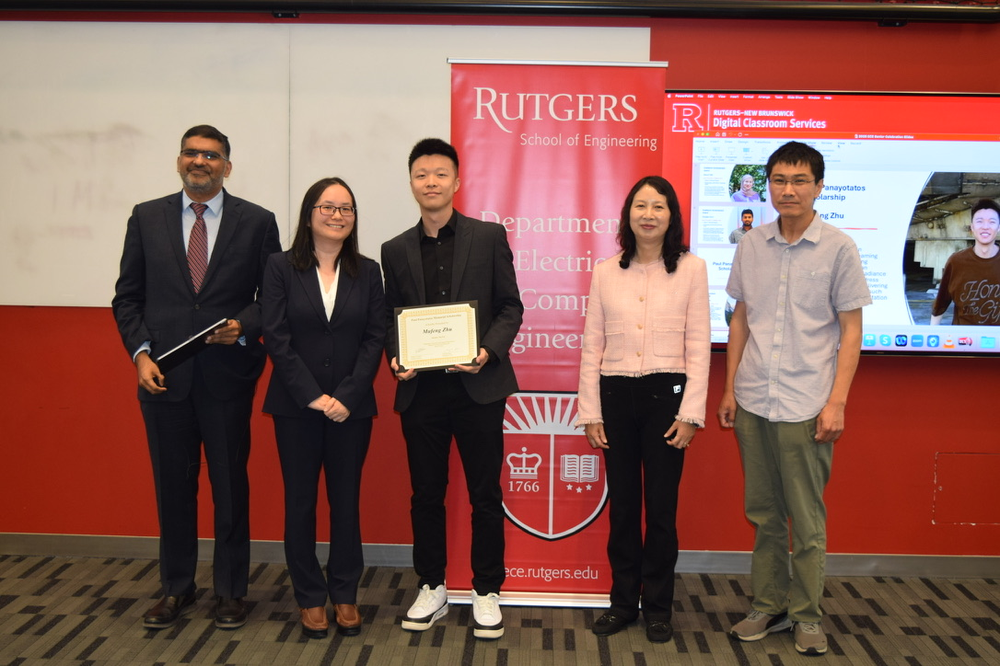
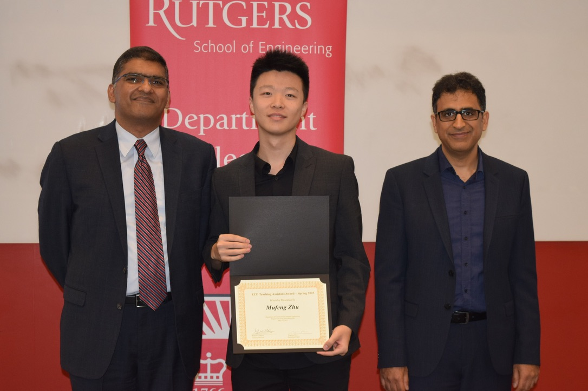

About
I'm currently a PhD student in Electrical and Computer Engineering, Rutgers University, supervised by Prof. Yao Liu. My research focuses on immersive video streaming technologies, including streaming 3D Gaussian Splatting and Neural Radiance Fields (NeRF). My research projects address system challenges in delivering immersive experiences, such as bandwidth and computation limitations. I received my M.S. degree from Rutgers University in 2022 and my B.S. degree from the University of Electronic Science and Technology of China in 2021. I am committed to advancing technologies that enable more immersive virtual experiences through optimization.
Resume: CV
Education
- Doctor of Philosophy, Electrical and Computer Engineering, Rutgers, The State University of New Jersey 2022 - present
- M.S., Electrical and Computer Engineering, Rutgers, The State University of New Jersey 2020 - 2022
- B.S., Information and Communication Engineering, University of Electronic Science and Technology of China 2017 - 2021
Publications
2025
SGSS: Streaming 6-DoF Navigation of Gaussian Splat Scenes
Mufeng Zhu, Mingju Liu, Cunxi Yu, Cheng-Hsin Hsu, Yao Liu
ACM 16th 2025 Multimedia Systems Conference (MMsys'25).
Our code is avaiable now. symmru/SGSS
FDIMDWOSGSS
symmru/SGSS
FDIMDWOSGSSEyeNavGS: A 6-DoF Navigation Dataset and Record-n-Replay Software for Real-World 3DGS Scenes in VR
Zihao Ding, Cheng-Tse Lee, Mufeng Zhu, Tao Guan, Yuan-Chun Sun, Cheng-Hsin Hsu, Yao Liu
Our code and dataset are avaiable now.
symmru
LTS: A DASH Streaming System for Dynamic Multi-Layer 3D Gaussian Splatting Scenes
Yuan-Chun Sun, Yuang Shi, Cheng-Tse Lee, Mufeng Zhu, Wei Tsang Ooi, Yao Liu, Chun-Ying Huang, Cheng-Hsin Hsu
ACM 16th 2025 Multimedia Systems Conference (MMsys'25 Best Paper Award).Joint Learning of Point Clouds and Motion Vectors for Volumetric Video
Cheng-Tse Lee, Yuang Shi, Yuan-Chun Sun, Mufeng Zhu, Wei Tsang Ooi, Yao Liu, Chun-Ying Huang, Cheng-Hsin Hsu
Immersive Mixed and Virtual Environment Systems (MMVE'25).
2024
Dynamic 6-DoF Volumetric Video Generation: Software Toolkit and Dataset
Mufeng Zhu, Yuan-Chun Sun, Na Li, Jin Zhou, Songqing Chen, Cheng-Hsin Hsu, Yao Liu
IEEE International Workshop on Multimedia Signal Processing (MMSP'24).
Our code is avaiable now.
symmru/software&dataset
A Comparative Study of K-Planes vs. V-PCC for 6-DoF Volumetric Video Representation
Na Li, Mufeng Zhu, Shuoqian Wang, Yao Liu
Immersive Mixed and Virtual Environment Systems (MMVE'24).
2023
Learning-based Homography Matrix Optimization for Dual-fisheye Video Stitching
Mufeng Zhu, Yang Sui, Bo Yuan, Yao Liu
ACM SIGCOMM Workshop on Emerging Multimedia Systems (EMS'23).
Our code is available now.
symmru/fisheye
VQBA: Visual-Quality-Driven Bit Allocation for Low-Latency Point Cloud Streaming
Shuoqian Wang, Mufeng Zhu, Na Li, Mengbai Xiao, Yao Liu
ACM International Conference on Multimedia (MM'23).
Teaching experience
332:378/332:571: Virtual Reality & Technology
Teaching Assistant and Lab Instructor, Spring 2023, Spring 2024, Spring 2025332:351: Programming Methodology II
Teaching Assistant, Fall 2022
Awards
Paul Panayotatos Scholarship, Department of Electrical and Computer Engineering
Rutgers University, 2025

ECE Leadership and Service Award, Department of Electrical and Computer Engineering
Rutgers University, 2025
Best Teaching Assistant Award, Department of Electrical and Computer Engineering
Rutgers University, 2023
